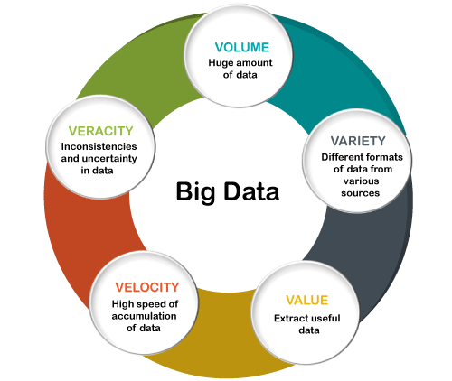

Course Goals
layout: false class: title-slide-section-red, middle
Course Goals
Justin Post
Welcome to Big Data Analysis!
What is Big Data?
.left45[ - 5 V’s of Big Data + Volume + Variety + Velocity + Veracity (Variability) + Value]
.right55[
]
Course Plan
Course split into four topics
Programming in
pythonBig Data Management
Modeling Big Data (with
Sparkviapyspark)Streaming Data
What is Python?
A very high-level language
General purpose
Interpreted language
–
Many modules available to form the basis of your program
Spacing used to write blocks of code
def square(arg1):
return arg1**2
square(arg1 = 10)100Programming in Python (Prep for Dealing with Big Data)
JupyterLabas our IDE (interactive development environment)- Basic Use of Python
- Markdown capabilities of
JupyterLab - Python Modules
Programming in Python (Prep for Dealing with Big Data)
JupyterLabas our IDE (interactive development environment)- Basic Use of Python
- Markdown capabilities of
JupyterLab - Python Modules
- Basic data types & Writing Functions
- Control flow (if/then/else, Looping)
- Summarizing Data Ideas
Programming in Python (Prep for Dealing with Big Data)
JupyterLabas our IDE (interactive development environment)- Basic Use of Python
- Markdown capabilities of
JupyterLab - Python Modules
- Basic data types & Writing Functions
- Control flow (if/then/else, Looping)
- Summarizing Data Ideas
- Compound data types (including
Numpyarrays,pandasdata frames) - Summarizing data
- Common models and model evaluation
What Environment Will We Program In?
- Focused on interactive, exploratory computing
- Start with Google Colab and move to JupyterLab on a JupyterHub to run spark
JupyterLab
Notebooks
Work through cells
Cells can contain formatted text (via markdown), python code, or raw text (for JupyterLab)
Text cells can have math type, images, widgets, and more
Code cells allow you to submit code and output will be placed below the cell
Recap
.left45[ - 5 V’s of Big Data + Volume + Variety + Velocity + Veracity (Variability) + Value]
.right45[ - Course split into four topics
1. Programming in `python` (using JupyterLab)
2. Big Data Management
3. Modeling Big Data
4. Streaming Data]